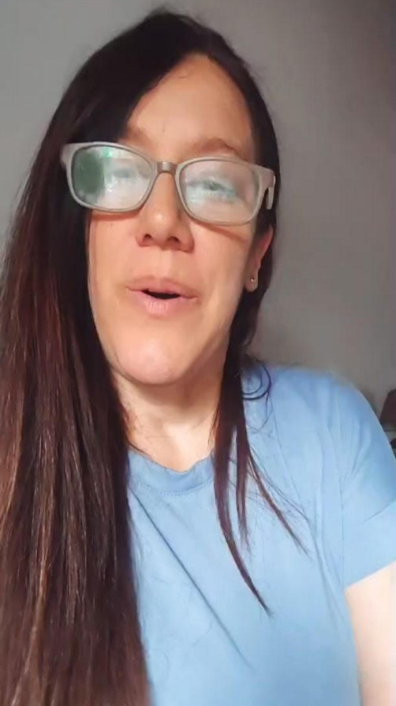
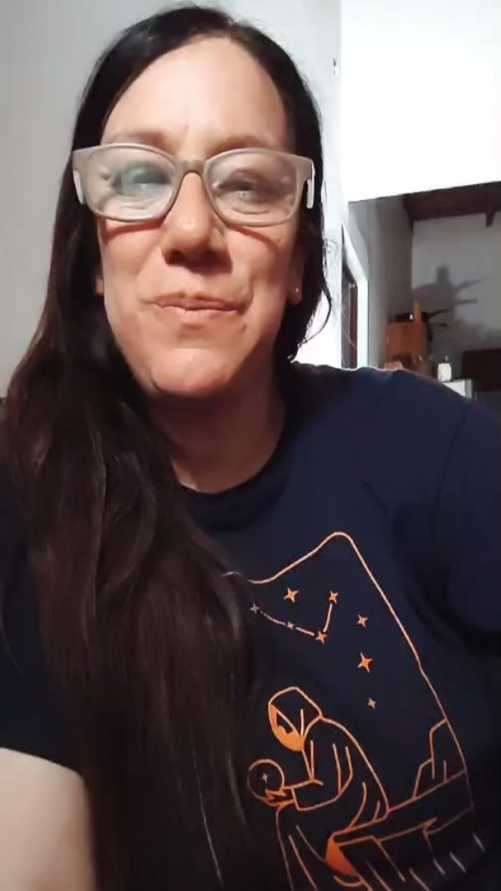

Entrevista · 2026-10-24
Cuidar también es transformar
Una conversación con Natalia Spallino sobre enfermería y transformación.
Leer entrevistaHistorias, entrevistas e investigaciones para comprender y transformar la práctica profesional.
Entrevista · 2026-10-24
Una conversación con Natalia Spallino sobre enfermería y transformación.
Leer entrevistaEntrevista · 2026-10-25
Carla Scaramella cuenta cómo nació Hirschsprung Argentina y por qué la información puede acompañar a las familias.
Leer entrevista
Entrevistas
Una experiencia sobre diabetes, escuela y cuidado compartido.
Ver entrevista
Entrevistas
Natalia Narváez comparte su experiencia en la enfermería escolar.
Ver entrevistaVoces · 2026-10-24
La salud también forma parte de la vida cotidiana en la escuela.
Leer columna
Evidencia · 2026-10-24
Una mirada sobre el error, el aprendizaje y las prácticas de cuidado.
Leer columnaPróximamente encontrarás publicaciones en esta sección.

Editorial
Por qué nace SALUD DESDE ADENTRO y qué significa contar la salud desde adentro.
Leer la CartaConvocatoria
SALUD DESDE ADENTRO quiere escuchar experiencias que ayuden a comprender mejor cómo se vive la salud.
Conocer la convocatoria